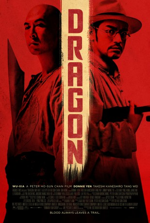

#2048 Dragon
 
 IMDB-Wertung: 7.1 / 10
IMDB-Wertung: 7.1 / 10  Metascore: 62
Metascore: 62 
Liu, Papiermacher und Vater von zwei Söhnen, führt ein zurückgezogenes Leben in einem kleinen Dorf. Bis zu dem Tag, an dem er zufällig Zeuge eines Raubüberfalls wird und die beiden Räuber aus Selbstverteidigung tötet. Für Kommissar Xu Bai-jiu, der zur abschließenden Klärung in die Provinz geschickt wird, gibt dieser Fall einige Rätsel auf. Wie kann es einem durchschnittlichen Familienvater gelingen, zwei derart Brutale Gangster so gezielt auszuschalten? Das setzt die Beherrschung außergewöhnlicher Kung-Fu-Techniken voraus. Trotz unzähliger Verhöre ist jedoch nichts aus Liu herauszubekommen. Der findige Ermittler muss nun zu drastischeren Maßnahmen greifen und kommt Lius dunklem Geheimnis allm��hlich auf die Spur. Nicht ahnend, dass er damit das ganze Dorf in Gefahr bringen wird.
Jahr: 2011
Dauer: 98 Minuten
FSK: 16
Land: Hong-Kong Studio: Senator Home EntertainmentTonspuren:
Untertitel: Deutsch,
Auflösung: 1080p (1920x816) Größe: 5242 MB
Genre: Action, Thriller, Drama, Krimi
Regisseur: Peter Ho-Sun Chan
Drehbuch: Oi Wah Lam, Joyce Chan
Soundtrack: Kwong Wing Chan, Peter Kam, Chatchai Pongprapaphan
Darsteller:
 Donnie Yen als Liu Jin-Xi
Donnie Yen als Liu Jin-Xi Takeshi Kaneshiro als Detective Xu Bai-Jiu
Takeshi Kaneshiro als Detective Xu Bai-Jiu- Wei Tang als Ah Yu
 Yu Wang als The Master
Yu Wang als The Master Wu Jiang als Xu's investigator
Wu Jiang als Xu's investigator- Xiaoran Li als Bai-Jiu's wife
- Kara Hui als The Master's wife
- Kang Yu als Yan Dongsheng
- Kenji Tanigaki als Yan's associate
- Li Jia-Min als Liu Xiao-Tian
- Wei Zheng als Liu Fang-Zheng
- Qing-Hua Cun als Young Thief's Father
- Shou-Wei Cun als Villager
- Shou-Ze Cun als Villager
- Xian-Hua Cun als Villager
- Cun Dai-Ying als Villager
- Li De-Fen als Villager
- Duan De-Qiang als Villager
- You-Qing Deng als Villager
- Pan Han-Ying als Butcher's child
- Shan-Shan Hu als Butcher's wife
- Yang Huan als Soldier
- Ma Jia-Heng als Villager
- Jiamin Li als Xiaotian
- Yi-Chong Lin als Villager
- Yu-Yu Liu als Villager
- Zheng-Lin Liu als Villager
- Zhaogang Ma als Butcher
- Han Mu-Tun als Officer
- Du Ning als Tavern waiter
- Yan Qin als Tavern owner
- Lin Ru-Bi als Villager
- Cun Shao-De als Villager
- He Shao-Wei als Village elder
- Cun Shi-Dong als Villager
- Li Shi-Shi als Butcher's child
- Zhou Shou als Butcher
- Chun-Yuan Wang als Magistrate
- Fei Wang als Coroner
- Jinsong Wang als Advisor
- Lian-Sheng Wang als No. 2 village elder
- Wang Wei als No. 1 village elder
- Feng-Chun Xu als Butcher's wife
- Hua Yan als The Master's Henchman
- Li-Hui Yang als Villager
- Tian-Rong Yang als Village elder
- Yan-Xian Yang als Villager
- Xian-Guo Yin als General Store Keeper's Wife
- Rong-Guang Zhang als Village elder
- Yan-Qi Zhang als Young thief
Datei: X:\HD-Eastern-Classic(A-M)\Dragon (2011, FSK16, 1920x816).mkv seit 25.09.2015
Festplatte: HD Eastern+Western
 Es gibt insgesamt 63 Filme in der Gruppe 'HD-Eastern-Classic(A-M)'
Es gibt insgesamt 63 Filme in der Gruppe 'HD-Eastern-Classic(A-M)'